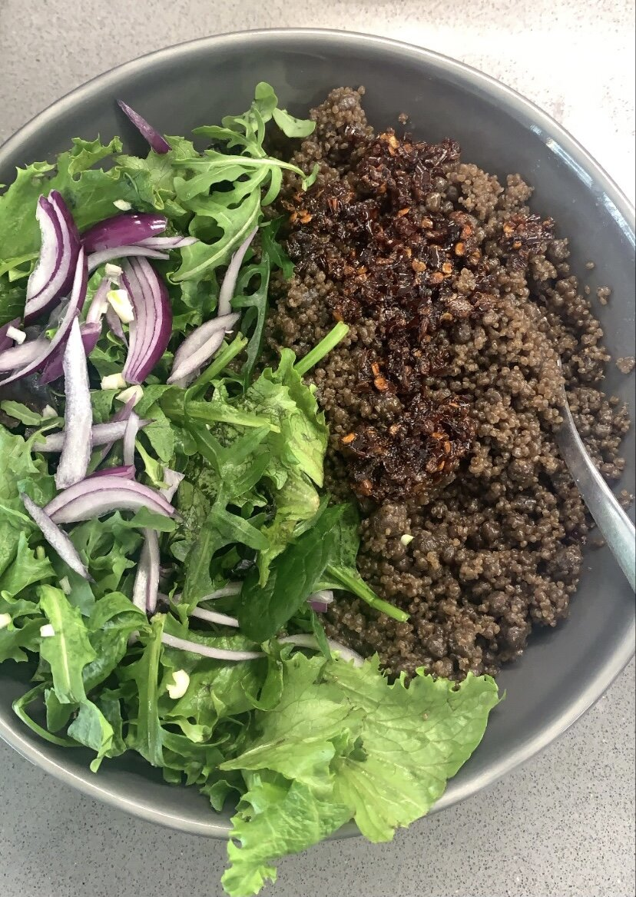

Wasawasa
Wasawasa! A couscous like meal made from yam flour is one of my favorite street foods growing up in Tamale. In fact, the vendors in school knew my order right when I showed up; “wasawasa, gbana ( wele, kpomo), talia ni shito” lool. I still have it whenever I am back so when I was back earlier in the year, I knew that I had to learn how to make it! It is definitely a beautiful labor of love, so here it goes:
Ingredients
- 2 cups yam flour
- 1/3 a cup of water
- Salt to taste
- Any good cooking Oil
Directions
- Get a pot of water going on medium heat (you want this to start to boil when ready to steam your yam flour mix)
- Sieve your flour to get rid of any unwanted debris (the flour I used was milled in a public mill used of groundnuts, corn etc. so it is inevitable that some of these residues may be in it)
- Pour the sieved yam flour into a big bowl and gradually add water in. You want to mix it thoroughly in circular motion aiming for the flour and water mixture to turn into small grains like couscous. Do not be heavy on the water but if you are, you can adjust with flour. Be patient because this can take up to 10 minutes. To speed up the process, you can shake the bowl so be patient and crack on till you get that texture (like video above)
- Get the second part of your steamer on the boiling water and pour the mixture in and cover it for 15 minutes, staring gentle after the first 10 minutes
- After 15 minutes, take it off the fire and rinse in cold water to allow any unwanted particles that may still be in to come to the surface, and also to take any bitterness that yam can sometimes have. The water also helps to break any clumps that may have formed. You may have to wash it twice
- Let it drain for a few minutes and then add 3 teaspoons of oil, salt to taste and mix
- Get the mixture back into the steam pot/colander and back on the boiling pot of water
- To keep the steam in, you can put a clean kitchen cloth/ parchment paper over the pot before covering. After another 10 to 12 minutes, your wasawasa is ready to be taken off the fire and into a serving dish
- Serve with shito and all the trimmings you want (spaghetti, cooked black eyed-beans, chopped lettuce/ cabbage, onions etc. and any protein choice! Enjoy and tag us when you do @atasteofhomeabroad